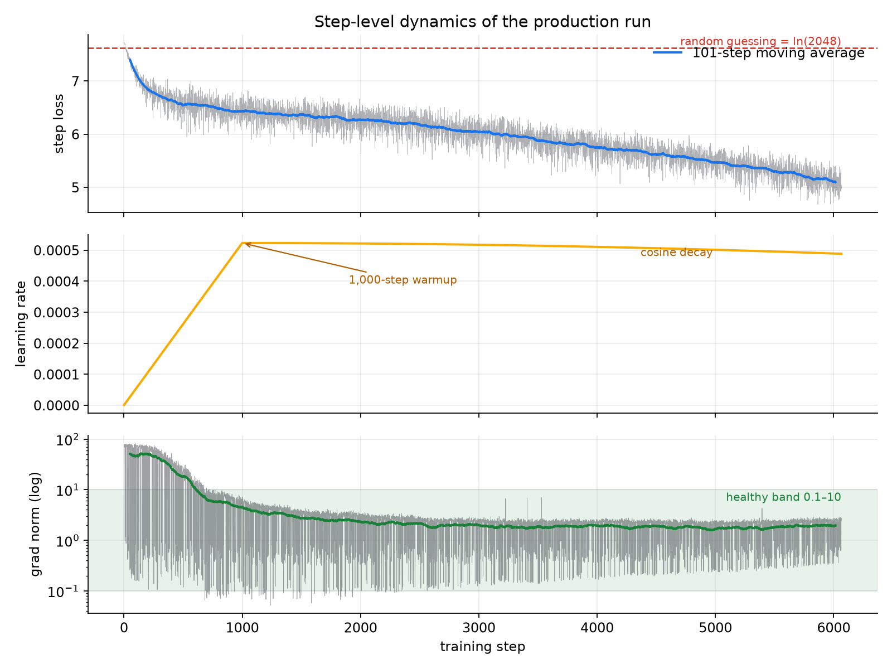

What This Is
Music-LLM 45M is a complete text-to-music generation system built the hard way: a MusicGen-style autoregressive transformer where the attention layers, the training loop, the generation sampler, and the two-GPU pipeline parallelism it trains with are all written by hand in PyTorch — no training frameworks, no model libraries for the core. Type “jazz music” and it writes 30 seconds of audio, token by token. It is deliberately a small model built for research and education: the goal is a fully explainable system, not production-quality music — at this scale it produces genre-flavoured texture, not finished songs.
Why build it by hand?
To own every layer of the stack — from audio codecs and cross-attention to GPipe micro-batch scheduling and the hardware-level debugging that real distributed training demands.
Architecture
Audio becomes language: a frozen EnCodec codec turns waveforms into 4 parallel token streams (2048-way each, 50 per second), a frozen T5 encoder turns the text prompt into conditioning vectors, and the 44.9M-parameter decoder — 8 blocks of causal self-attention → cross-attention → MLP — predicts the next audio token across all 4 codebooks at once, with classifier-free guidance steering generation toward the prompt.
Training ran on a workstation with two NVIDIA RTX A6000s using
GPipe-style pipeline parallelism implemented from scratch (~120 lines, no
torch.distributed): blocks 1–4 live on GPU 0, blocks 5–8 and
the output heads on GPU 1, and each batch streams through as 4 micro-batches so both
GPUs compute simultaneously. Per-micro-batch losses are weighted by their share of
valid tokens, making the accumulated gradients mathematically identical to
single-device training — a property proven by the project’s test suite.
The war story
The first training runs produced infinite gradients while the loss looked healthy. A one-variable-at-a-time probe suite traced it through code, kernels and topology to silent PCIe peer-to-peer corruption on the host — every direct GPU-to-GPU copy was garbled while the driver reported P2P as available. The pipeline now verifies the link at startup and reroutes through CPU memory when corrupt, at a measured 0.3% overhead. Hardware-level debugging is part of distributed training.
Hyperparameter Tuning
Before the full run, the learning rate and dropout were searched with Optuna (TPE sampler, median pruning, SQLite-backed study) — with each trial training through the real two-GPU pipeline under the same warmup-cosine schedule as production, after an earlier search demonstrated that short constant-LR trials crown learning rates that stall at scale. Lagging trials are pruned at a third of the cost; the winner (peak lr ≈ 5e-4, dropout ≈ 0.014) transferred directly.


Training
The production run: all 999 GTZAN clips (≈8 h of audio), 20-second windows, batch 16 as 4 pipeline micro-batches (≈64K tokens per step), AdamW with 1,000-step warmup and cosine decay, gradient clipping, and a non-finite-gradient guard. Validation loss dove from 6.6 to its minimum of ≈5.98 at step 4,000, where the best checkpoint was frozen automatically; the train/validation curves then diverged — the classic overfitting signature on a small corpus — and the run was stopped. Knowing when to stop is part of the craft: the released model is the validation-minimum checkpoint, not the last one.


Listen
Three prompts, 30 seconds each, generated by the released checkpoint. Honest scope: trained on 8 hours of audio with 10 genre captions, Nava produces genre-flavoured musical texture rather than finished songs — the point is the working end-to-end system, every line of which is explainable.
Model & Code
khashayargh/music-llm-45m ↗
example.py ship together — three commands from download to generated audio.